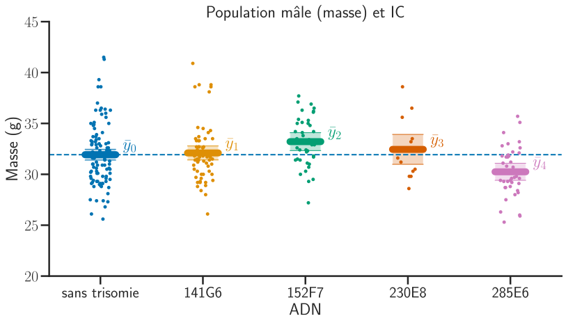

This is an undergraduate course (in French!) introducing statistics and data visualisation.
Syllabus
Polycopié
Introduction à Python (HLMA310) (en cours de rédaction)
Widgets introductifs
| Distributions continues (1D) | Distributions Gaussiennes (2D) | Distributions discrètes |
|---|---|---|
| Quantiles | Courbes ROC et Tests | Moindres Carrés Ordinaires |
|---|---|---|
Sources: https://github.com/josephsalmon/Random-Widgets
Autres widgets (en anglais): https://seeing-theory.brown.edu/
Cours: slides et notebooks
StatDescriptives.pdf, StatDescriptives.ipynb, StatDescriptives.html
GaussianDistribution.pdf, GaussianDistribution.ipynb, GaussianDistribution.html
Echantillonnage.pdf, Echantillonnage.ipynb, Echantillonnage.html
EstimationTests.pdf, EstimationTests.ipynb, EstimationTests.html
ModeleLineaire.pdf, ModeleLineaire.ipynb, Widgets_MCO.ipynb, ModeleLineaire.html
Travaux dirigés:
Travaux pratiques:
Introduction : TP-Introduction.pdf, TP-Introduction_squelette.ipynb, TP-Introduction.ipynb,
TP-Noté: TP-MCO.pdf, TP-MCO.ipynb
")